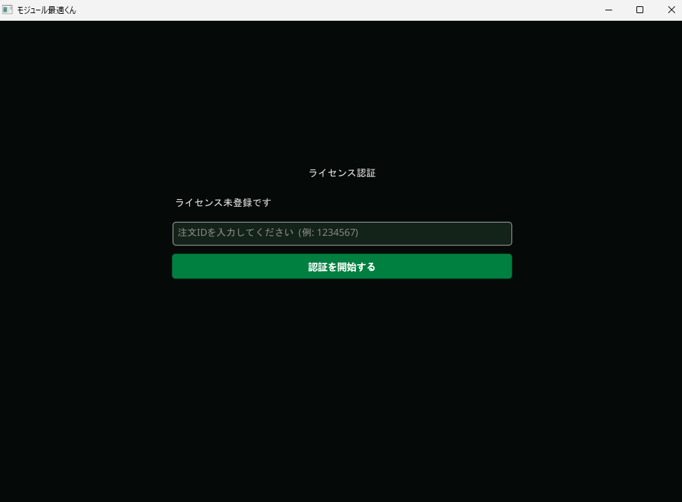
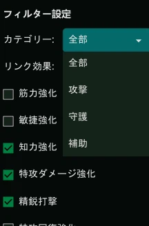

オーダー番号は、以下のいずれかの場所に記載されています。
このオーダー番号がライセンス登録時に使用するIDとなります
ダウンロードしたファイルを「すべて展開（解凍）」してください。
ファイル内にあるnpcap.exeをインストールしてください
不安でしたら公式サイトからでもインストールできます↓
https://npcap.com/#download
saiteki-kun.exe を起動してください。
ライセンス登録画面でオーダー番号を入力してください。
ログイン時のデータを取得しているため既にログイン中の方は再ログインをお願いします
モジュールタイプとパワー効果フィルターの設定で絞り込みも出来ます。
